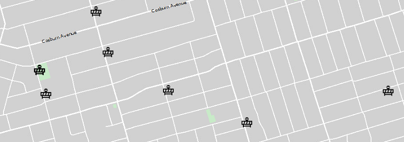
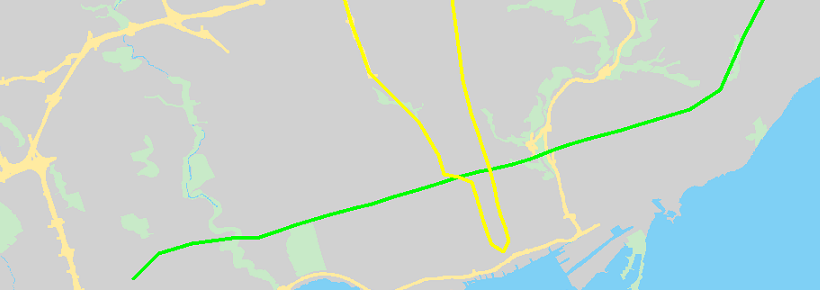
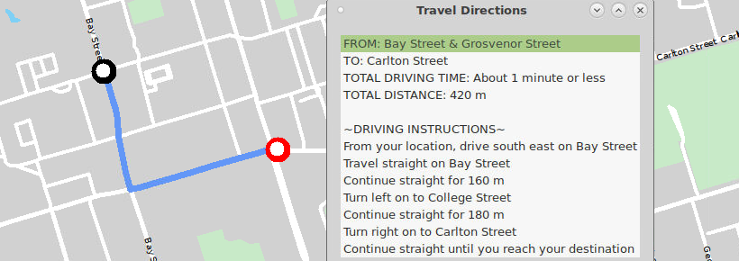

Computer Engineering Student at the University of Toronto
Skills
A snapshot of my technical abilities
C/C++
Proficient
General-purpose and object oriented programming in both large and small scale programs.
Web Design
Learning
Web design using HTML/ CSS/ Bootstrap 4.
Verilog
Familiar
Hardware description language used to design and verify digital, analog, and mixed-signal circuits.
ARM Assembly
Familiar
Low level programming for processing chips used in smartphones and other mobile devices.
Projects
A glimpse at my porfolio.
Road Map
Featured road mapping program similar to Google Maps
Astro Party
Game written in Verilog designed for use on an Intel FPGA
Github
Repositories of some current and past projects and work.
Personal Website
Introduction to basics of web design with HTML and CSS.
About
Second year Computer Engineering Student at the University of Toronto. I am passionate about technology and constantly strive to learn more, with a great interest in embedded sysyems and evolving computer hardware.
University of Toronto
2018-Present
Department of Computer Engineering CGPA: 3.28
Toronto District Christian High School
2013-2018
Governor General's Academic Medal receipiant Average: 98.5%
Contact
Want to get in touch with me? Send me a message and I will get back to you as soon as possible!
Location Toronto, Ontario
Phone +1 (647) 620 8581
Email ntran.nicholas@gmail.com
Road Map
Featured mapping software similar to Google Maps
This was a semester long project with the end goal being to create a functional,
fully featured mapping software similar to the likes of Google Maps. Written in C++, the project stressed
our skills in design, communication, software development and project management. The map features a graphical
interface, current road closures, multiple city maps, subway stations and road directions.
Map Features
A couple of the features implemented includes:

Current road closures

Subway Stations

Driving Instructions
The Algorithms
To provide navigation directions, the map uses an A* algorithm to compute the shortest route
between intersections based on travel time. A* is a variation of
Dijkstra's Algorithm, a well known Algorithm
used for finding the shortest path between nodes in a graph. It trades some accuracy
for efficiency compared to Dijkstra's, relying on a heuristic to decide which node to visit next. It takes the current time to the current node,
and adds it to the estimated time to the destination, picking the shortest total time to be the next visited node.
As a result, in this case A* ended up being a 3x-5x improvement in computation time.
Date: January 2020 - April 2020
Language: C++
Astro Party
Game written in Verilog designed for use on an Intel FPGA
This was a final project for my digital systems course. Written in Verilog, it aims to be a take on the mobile game Astro Party.
Here, two players battle it out in spaceships, trying to destory the other player's ship, where the first to 5 eliminations is the winner. Score was tracked on the FPGA's
integrated HEX displays. Input was done via a PS2 Keyboard, and was outputted to a VGA display. Processing was done by a De1-SoC FPGA.
Gallery
Date: November 2019
Language: Verilog
Road Map
Featured mapping software similar to Google Maps
This was a semester long project with the end goal being to create a functional,
fully featured mapping software similar to the likes of Google Maps. Written in C++, the project stressed
our skills in design, communication, software development and project management. The map features a graphical
interface, current road closures, multiple city maps, subway stations and road directions.
Map Features
Current road closures
Subway Stations
Subway Stations
The Algorithms
To provide navigation directions, the map uses an A* algorithm to compute the shortest route
between intersections based on travel time. A* is a variation of
Dijkstra's Algorithm, a well known Algorithm
used for finding the shortest path between nodes in a graph. A* trades some accuracy
for efficiency compared to Dijkstra's, relying on a heuristic to decide which node to visit next. It takes the current time to the current node,
and adds it to the estimated time to the destination, picking the shortest total time to be the next visited node.
As a result, in this case A* ended up in a 3x-5x improvement in computation time.
Road Map
Featured mapping software similar to Google Maps
This was a semester long project with the end goal being to create a functional,
fully featured mapping software similar to the likes of Google Maps. Written in C++, the project stressed
our skills in design, communication, software development and project management.
Map Features
A couple features added to the map include
Current road closures
Subway Stations
Driving Instructions
The Algorithms
To provide navigation directions, the map uses an A* algorithm to compute the shortest route
between intersections based on travel time. A* is a variation of
Dijkstra's Algorithm, a well known Algorithm
used for finding the shortest path between nodes in a graph. A* trades some accuracy
for efficiency compared to Dijkstra's, relying on a heuristic to decide which node to visit next. It takes the current time to the current node,
and adds it to the estimated time to the destination, picking the shortest total time to be the next visited node.
As a result, in this case A* ended up in a 3x-5x improvement in computation time.